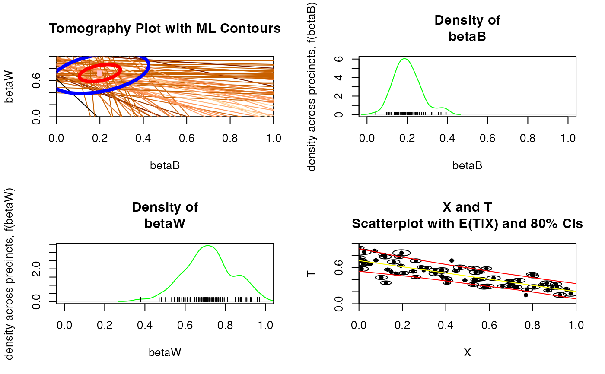

plot.ei.Rd`plot' method for the class `ei'.
# S3 method for ei plot(x, ...)
| x | An |
|---|---|
| ... | A list of options to return in graphs. See values below. |
Tomography plot with the data only. See Figure 5.1, page 81.
Tomography plot with ML contours. See Figure 10.2, page 204.
Tomography plot with \(80\%\) confidence intervals. Confidence intervals appear on the screen in red with the remainder of the tomography line in yellow. The confidence interval portion is also printed thicker than the rest of the line. See Figure 9.5, page 179.
Tomography plot with \(95\%\) confidence intervals. Confidence intervals appear on the screen in red with the remainder of the tomography line in yellow. The confidence interval portion is also printed thicker than the rest of the line. See Figure 9.5, page 179.
Tomography plot with estimated mean posterior \(\beta_i^b\) and \(\beta_i^w\) points.
Tomography plot with mean posterior contours.
Density estimate (i.e., a smooth version of a histogram) of point estimates of \(\beta_i^b\)'s with whiskers.
Density estimate (i.e., a smooth version of a histogram) of point estimates of \(\beta_i^w\)'s with whiskers.
Basic \(X_i\) by \(T_i\) scatterplot.
Basic \(X_i\) by \(T_i\) scatterplot with circles sized proportional to \(N_i\).
\(X_i\) by \(T_i\) plot with estimated \(E(T_i|X_i)\) and conditional \(80\%\) confidence intervals. See Figure 10.3, page 206.
xtfit with Goodman's regression line superimposed.
All the simulated \(\beta_i^b\)'s by all the simulated \(\beta_i^w\)'s. The simulations should take roughly the same shape of the mean posterior contours, except for those sampled from outlier tomography lines.
\(X_i\) by the bounds on \(\beta_i^b\) (each precinct appears as one vertical line), see the lines in the left graph in Figure 13.2, page 238.
\(X_i\) by the bounds on \(\beta_i^w\) (each precinct appears as one vertical line), see the lines in the right graph in Figure 13.2, page 238.
Compares truth to
estimates at the district and precinct-level. Requires truth in the
ei object. See Figures 10.4 (page 208) and 10.5 (page 210).
For each observation, one tomography plot appears with the line for the particular observation darkened. After the graph for each observation appears, the user can choose to view the next observation (hit return), jump to a specific observation number (type in the number and hit return), or stop (hit "s" and return).
For each observation, one page of graphics appears with the posterior distribution of \(\beta_i^b\) and \(\beta_i^w\) and a plot of the simulated values of \(\beta_i^b\) and \(\beta_i^w\) from the tomography line. The user can choose to view the next observation (hit return), jump to a specific observation number (type in the number and hit return), or stop (hit ``s" and return).
Returns any of a set of possible graphical objects, mirroring those in the
examples in King (1997). Graphical option lci is a logical value
specifying the use of the Law of Conservation of Ink, where the implicit
information in the data is represented through color gradients, i.e. the
color of the line is a function of the length of the tomography line. This
can be passed as an argument and is used for ``tomogD'' and ``tomog'' plots.
Gary King (1997). A Solution to the Ecological Inference Problem. Princeton: Princeton University Press.
Gary King <<email: king@harvard.edu>> and Molly Roberts <<email: molly.e.roberts@gmail.com>>
#> [1] "Running 2x2 ei"#>#>